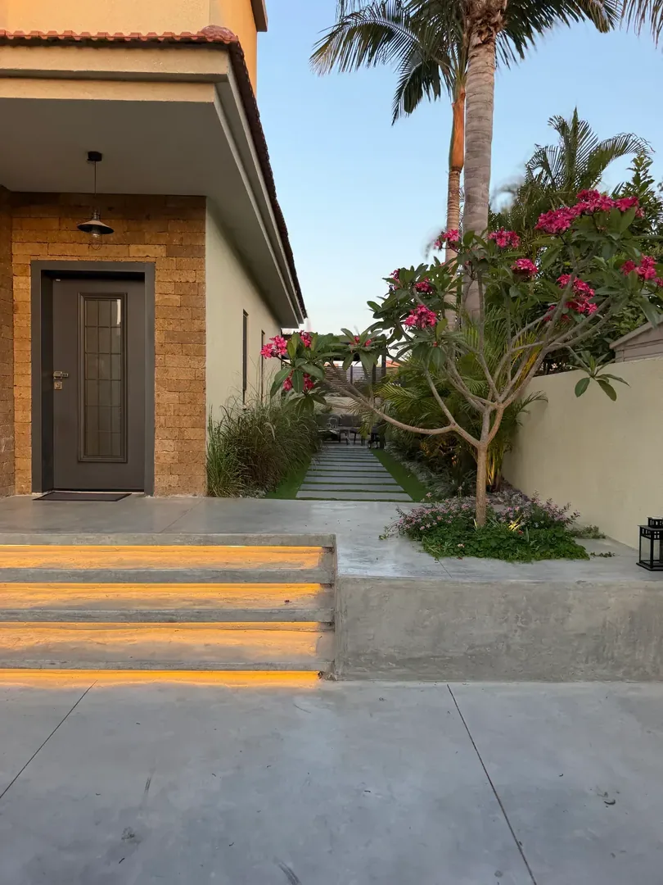

חנות צמחים אונליין · אתר פעיל
עץ ומלואו
בוחרים צמחים וכדים שמתאימים לבית, וממשיכים לאישור הזמנה בוואטסאפ.
- קטלוג של צמחים, כדים וסטים מוכנים, לצד רעיונות לשילוב בבית.
- אפשר לדפדף לפי תנאי אור, מקום וגודל, ולרכז את הבחירות בסל.
- ממשיכים מהסל לוואטסאפ כדי לוודא זמינות ופרטי הזמנה.
הקישור פותח את האתר הפעיל בחלון נפרד. ההזמנה נסגרת מול החנות, ללא תשלום באתר.
לאתר החנות ↗